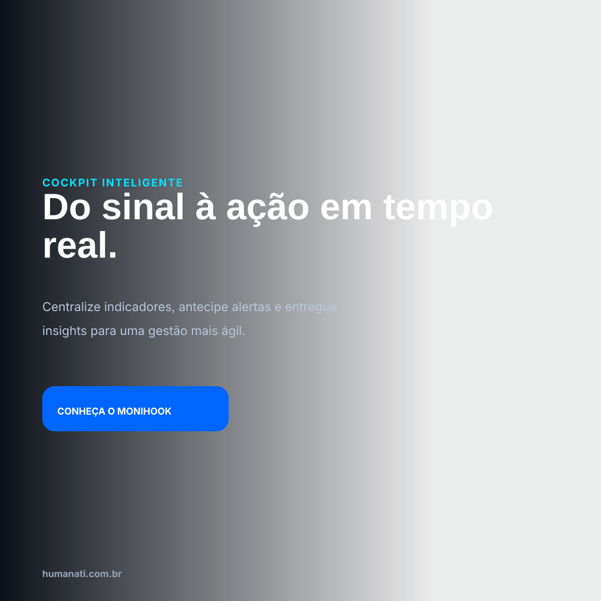
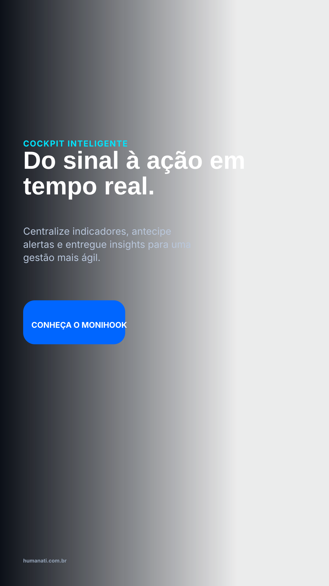
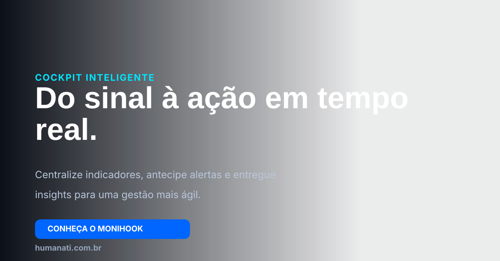

Fontes editáveis.
Clique para abrir o vetor diretamente no navegador.

Feed SVG
Story SVG
LinkedIn SVGDisplay SVGClique para abrir o vetor diretamente no navegador.

Feed SVG
Story SVG
LinkedIn SVGDisplay SVG